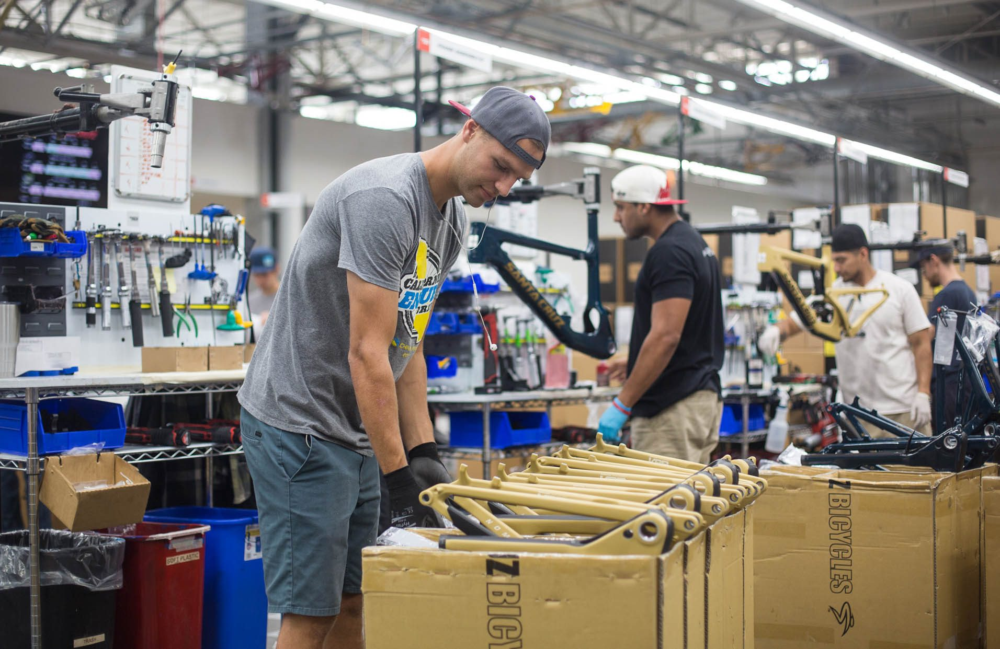

A MANIFESTATION NOT A MANIFESTO
We build simply advanced bikes of such high quality that it results in No Missed Rides; as a business we believe bicycles are a force for good, and the people who ride our bikes share our obsession.
Santa Cruz Bicycles was founded on one objective: to make mountain bikes that are "Simply Advanced”.
Pioneering technology that results in bikes that perform exceptionally well and are built to last means Santa Cruz Bicycle owners suffer No Missed Rides.
We offer a lifetime of rider support because we’ve been focusing on building “Quality Bicycles Since 1994”.
Every model is built to custom specifications by skilled bike fans who understand and appreciate our products. Their obsession for quality translates to making better experiences for riders.
We believe bikes are a force for good so we foster responsible attitudes towards trails, our business operations, our employees and the people that ride our bikes.
